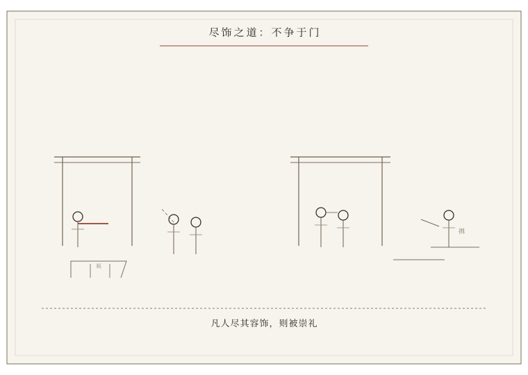

檀弓下 · 四·八十三 · 第 408 课
季孙之母死，哀公吊焉。曾子与子贡吊焉，阍人为君在，弗内也。曾子与子贡入于其厩而修容焉。子贡先入，阍人曰：「乡者已告矣。」曾子后入，阍人辟之。涉内霤，卿大夫皆辟位，公降一等而揖之。君子言之曰：「尽饰之道，斯其行者远矣。」
说什么事：季孙的母亲死了，哀公来吊。曾子与子贡也来吊，守门人因君在里面，不让他们进。二人转到季孙的马厩里，整理仪容。子贡先进，守门人说：「刚才已经通报过了。」曾子后进，守门人反而避让。二人走入内霤，卿大夫都让位，哀公从堂上降下一等，向他们作揖。君子说：「尽饰之道，其行得远啊。」
落在哪一层：以「饰」为界。礼不是把自己做大，是把自己「整到可敬」。
为何编在此位：上节一领席埋狗，此节一身衣入门。礼之「末」与「始」，都在这两处。
【经】季孙之母死，哀公吊焉。曾子与子贡吊焉，阍人为君在，弗内也。曾子与子贡入于其厩而修容焉。子贡先入，阍人曰：「乡者已告矣。」曾子后入，阍人辟之。涉内霤，卿大夫皆辟位，公降一等而揖之。君子言之曰：「尽饰之道，斯其行者远矣。」
【注】阍人，守门者。／更庄饰。／既不敢止，以言下之。／见两贤相随，弥益恭也。／礼之。
【疏】此一节论君子加服，人乃敬之事。○二子既入涉至内霤，卿与大夫皆逡巡辟位，公于堂上降阶一等，揖而礼之。○于时君子以二子盛饰备礼，遂美之云：凡人尽其容饰，则被崇礼。其尽饰道理，斯，此，此其施行可久远矣。所以可久远者，以二子初时不具衣服，则阍人拒之。二子退而修容，阍人虽是愚鄙，犹知敬畏，明其不愚之人则敬畏可知。是其尽饰之道，行之可长远矣。○案《丧大记》君临大夫之丧，「君即位于序端，卿大夫即位于堂廉楹西，北面东上」，是辟位者盖少西，逡巡而东面，不当北面之位。然君在，大夫得斯为二子辟位者，卿大夫等见公将降，故先辟位。○吊有常服，而得特为尽饰者，谓更服新衣也。
阍人 守门者。
为君在 因君在里面。
弗内 不让进。「内」同「纳」。
厩 马房。
修容 整饬仪容。
乡者 方才。
已告矣 已经通报过了。
辟之 避让。
内霤 堂前承檐水之处。
辟位 让位。
降一等 从堂上降下一级台阶。
揖之 向他们作揖。
尽饰 尽其仪容之饰。
行者远 其行得远，谓行之久长。
季孙的母亲死了，哀公来吊。曾子与子贡也来吊，守门人因君在里面，不让他们进。二人便到季孙的马厩里整理仪容。子贡先进，守门人说：「方才已通报过了。」曾子后进，守门人避开。二人走到内霤，卿大夫都让位，哀公从堂上降下一级，向他们作揖。君子说：「尽饰之道，其行得远啊。」
此章五段：拒、修、入、让、评。
一拒一修，是全章之枢。拒不是辱，修不是媚。
第一层 第一次被拒 「阍人为君在，弗内也」——不是无礼，是君在里面，门禁在此。
二人不与之争。 礼于门，先让门。
第二层 「入于其厩而修容」 注云「更庄饰」。
不争于门，退而修己。 此是全章最见修养的一步：把「被拒」转为「未备」。
第三层 疏之点破 疏云「二子初时不具衣服，则阍人拒之」。
故其被拒之由，不在阍人之愚，在己之未饰。 礼先自问，不先责人。
第四层 子贡先入与「乡者已告矣」 注云「既不敢止，以言下之」。
阍人不复拒，改以一言自下。 同一件被拒之事，此处已变为「我方才已报过」，语气转了。
第五层 曾子后入而「阍人辟之」 注云「见两贤相随，弥益恭也」。
一人先入，一人后入，而门之态度两变。 礼之效，不在争而在「相随」。
第六层 「涉内霤」与「公降一等」 卿大夫辟位，公降阶而揖。
一路入去，让的人越来越多。 疏云「卿大夫等见公将降，故先辟位」。
第七层 「尽饰之道，斯其行者远矣」 疏云「凡人尽其容饰，则被崇礼」。
此一句是《檀弓》对「礼之形式」最正面的一次肯定。 衣冠不是虚文；衣冠整，则愚鄙者亦知敬；愚鄙者知敬，则不愚者可知。
与今日何干 今人多以「不拘形式」为真，以「整衣冠」为虚。
此章给一句：先把自己整到可敬，门才开得下去。
| 左 | 右 |
|---|---|
| 君吊 | 门禁在 |
| 阍人弗内 | 非辱，是制 |
| 入厩修容 | 退而修己 |
| 子贡先入 | 以言自下 |
| 曾子后入 | 阍人辟之 |
| 涉内霤 | 卿大夫辟位 |
| 公降一等揖 | 礼之 |
| 尽饰 | 更服新衣 |
| 行者远 | 行之久长 |
画一幅左右两段的简略场景，视点平视。画面左段画一座门：两根立柱、一道横梁，门中立一守门人，手持一根横木拦在门内。门外二人并立，衣冠朴素，转身向左后方走。画面左后方画一间矮小的马厩：一个方框、一道单坡顶，厩内一匹马的长形轮廓。画面右段画同一座门，门已开，二人并立而入，衣形上添两道竖纹以示整饰。门内画两级台阶，台阶上立一人，向下作揖。不画文字。赭色只用在那根拦门的横木上。
